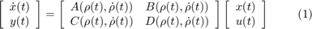
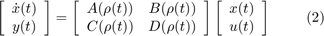
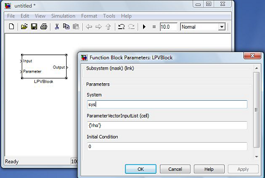
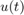
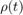
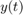
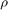
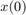
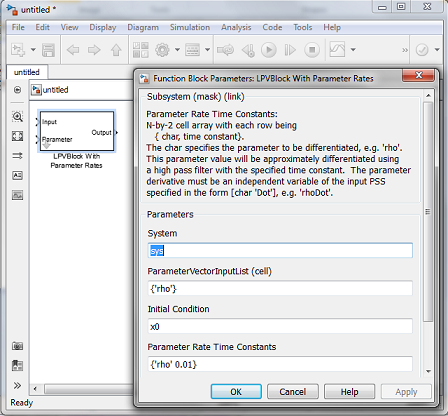

Simulink Blocks in LPVTools
LPVTools provides Simulink blocks to interface to the state-space LPV objects: pss, upss and plftss. The Simulink blocks enable users to include LPV systems in Simulink simulation models. One Simlink block is for systems that depend on a time-varying parameter and its derivative, as seen in Equation 1, while the other is for systems that do not depend explicitly on the derivative, as seen in Equation 2.


The Simulink block for the system shown in Equation 2 is shown in Figure 1.

Figure 1: Simulink LPV block and block mask.
The block in Figure 1 has inputs for the system input  and the parameter vector , and an output for . The block mask contains entries for the user to specify the system variable name, the order of the input parameter vectors , and the state initial condition . The block is implemented as a Simulink S-function under the block mask. The block currently performs a multidimensional linear interpolation to evaluate the state-space matrices at the specified parameter vector. An efficient implementation of this linear interpolation has been coded to reduce computation and speed up the simulation time.
LPVTools also includes a block for systems that depend explicitly on both the time-varying parameter and its derivative, as seen in Equation 1. This block is shown in Figure 2.

Figure 2: Rate-dependent Simulink LPV block and block mask.